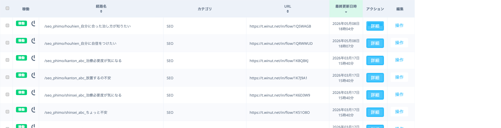
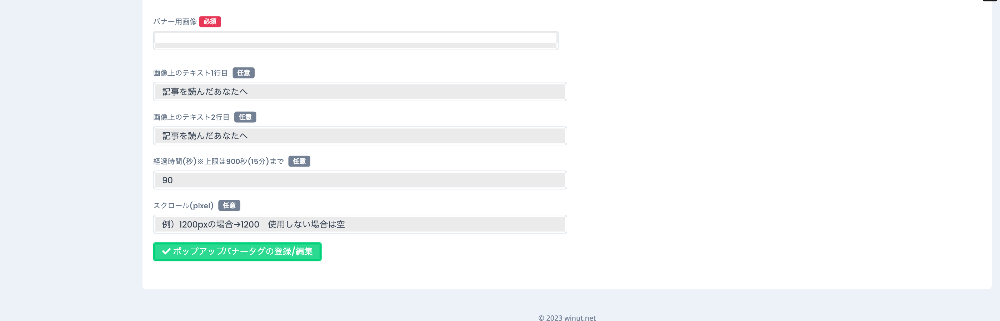
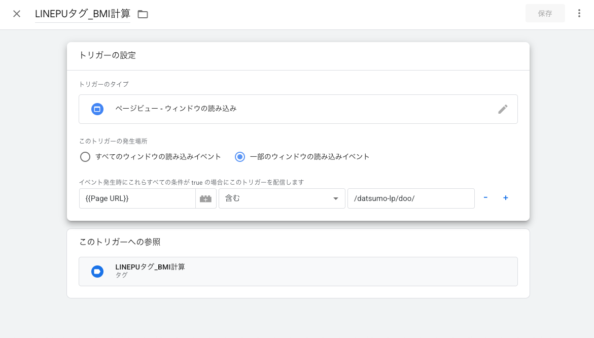
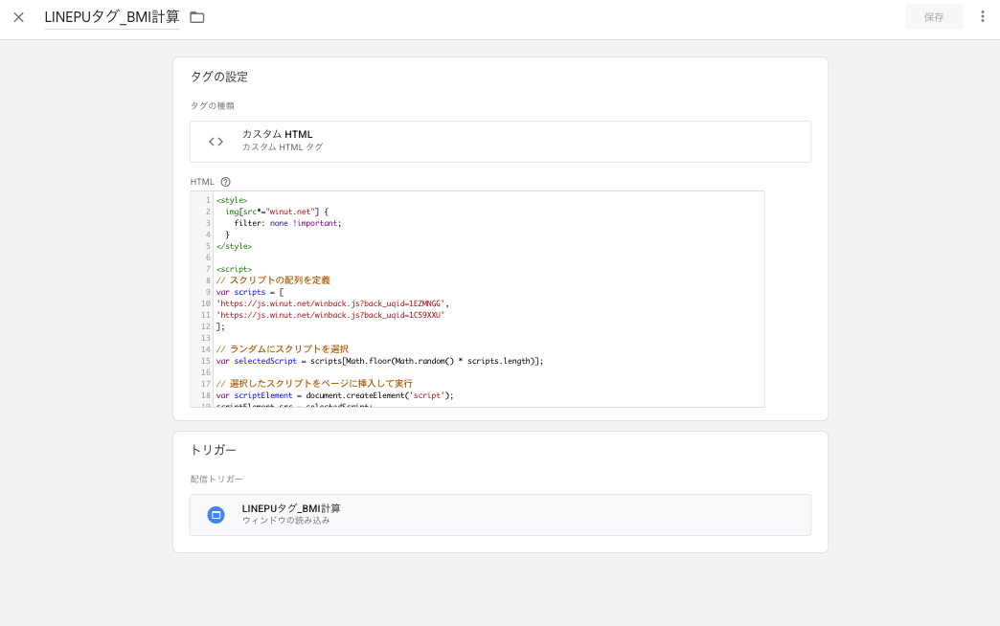

- LINEの友だちを「どこから来たか」で分類するタグを作る
- そのタグを自動で付ける友だち追加リンク（流入経路）を作る
- 記事から離脱しそうな人にLINE登録を促すポップアップ（離脱防止タグ）を設置する
業務全体の流れ（依頼フロー）
新規記事が完成してから、LINEの友だちを獲得できる状態にするまでの一連の流れです。各ステップのツールはリンクから開けます。Winutの詳しい操作はこのページの下（手順2〜6）にあります。
対象の新規記事が公開された状態からスタート。
記事本文を貼ってジャンルを選ぶと、おすすめの診断タイプ・PU訴求軸・PU文言が出る。「この記事に何のPUを設置すべきか／どんな文言にするか」をここで決める。
🔧 診断PU推薦ツールを開く ▶PU画像ジェネレーターに参考画像を1枚アップ→②で決めた文言・訴求軸でヘッドライン／サブコピー／はい・いいえ／イラストを差し替え→1000×1490pxで生成してダウンロード。これが離脱防止ポップアップのバナーになる。
🎨 PU画像ジェネレーターを開く ▶①タグ作成 → ②流入経路作成 → ③離脱防止タグ作成。流入経路URLと、ページ貼付用の<script>タグが発行される。
📘 このページの手順（2〜6）を見る ▼流入経路URLは記事・LP・ボタンに設置。離脱防止の<script>タグはGTM（Googleタグマネージャー）経由で対象記事に配信する（トリガー＋カスタムHTML→公開）。
※GTM部分は社内対応になる可能性あり（手順6は折りたたみ）。
1. まず全体像をつかむ
Winutでやることは、ざっくり3ステップ。この順番で作ると各パーツがキレイに連動します。
2. 準備：Winutにログインする
ブラウザで manage.winut.net/login を開きます。
- ログインID・パスワードを入力する。担当ジャンルのID／パスワードは下記「ログインアカウント一覧」ページを参照。
※入力欄に前のアカウントのID/パスワードが残っていることがある。残っていたら消して、担当ジャンルのものを入れ直す。 - 「ログイン」ボタンを押す。
- 画面右上に担当アカウント名（例：【PLUS】包茎手術）が出ていればログイン成功。
ログインアカウント一覧


- Winutは「1アカウント＝1ログイン」。別ジャンルを触るときは一度ログアウトして入り直す。
- 友だちリストには個人情報が含まれる。CSV/スクリーンショット等は外部流出厳禁。
3. ①タグを作成する
どこを開く？
左メニュー 友だち → タグ管理（URL：manage.winut.net/tags/ta_list）
手順
- タグ管理を開く。左側にフォルダ一覧が並んでいる（未分類／流入経路／クリック／CV など）。
- 整理用にフォルダを分けたい場合は 「＋フォルダを追加」 で先に作る（任意）。
- 画面上部の 「＋タグを追加」 を押す。
- 「タグの追加・編集」ウィンドウが開く。
- フォルダを選択（どこに入れるか）と タグ名 を入力する。
- 「確定する」 を押す。これでタグが1つ完成。


例：
seo_phimo_houhien_自信（〔ジャンル_記事_訴求〕で統一）
4. ②流入経路を作成する
流入経路＝「友だち追加リンク」。このリンクから登録した人に、①で作ったタグが自動で付きます。
どこを開く？
左メニュー URL → 流入別経路管理（URL：manage.winut.net/inflow_path/in_list）
手順
- 右上の緑ボタン 「＋流入経路新規登録」 を押す。
- 流入経路名 を入力（必須・日本語OK）。タグ名と揃えると分かりやすい。
- 青い 「アクションの設定」 ボタンを押す。
- 開いた窓の 「タグ追加 → タグ選択」 で、①で作ったタグを選ぶ。
- 推薦ツールで決まった診断タイプに合う既存のシナリオを選ぶ（新規作成ではなく既存から選択）。※シナリオを設定しないと、友だち追加後にトーク欄へ何も配信されません。
- 「設定する」 で窓を閉じる。
- （任意）カテゴリ を選ぶ（例：SEO）。分析のフィルタに使う。
- 下部の 「流入経路分析の登録・更新」 を押して保存。
- 一覧に戻ると、作った経路の行に URL（t.winut.net/in/flow/◯◯◯） が発行されている。これが友だち追加リンク。記事・LP・ボタンに設置する。



5. ③離脱防止タグ（ポップアップバナータグ）を作成する
記事を離脱しそうな人に出すポップアップ画像。クリックすると②の友だち追加リンクへ飛びます。
どこを開く？
左メニュー 計測 → ポップアップバナータグ（URL：manage.winut.net/back/ba_list）
手順
- 緑ボタン 「＋ポップアップバナータグ新規登録」 を押す。
- ポップアップバナータグ名 を入力する。
- 表示 を選ぶ：表示／SPのみ表示／PCのみ表示／非表示。スマホだけに出すなら「SPのみ表示」。
- 画像クリック時の挙動 で 「流入経路URLに遷移する」 を選ぶ。すると下に「流入経路設定」ボタンが出る。
- 「流入経路設定」 ボタンを押し、②で作った流入経路を選ぶ。
- 基本設定：経過時間（秒）に 90 を入力。「別タブ遷移（ブラウザアプリ離脱も含む）」を 「使用」 にチェック。
- バナー用画像（必須）を「ファイルを選択」でアップロード（PU画像ジェネレーターで作った画像）。サイズは 1000×1490px 推奨。
- 下部の 「ポップアップバナータグの登録/編集」 を押して保存。



- 「表示」を“非表示”にしていると、公開してもポップアップは出ない。設定後は表示状態を確認。
- クリック後の遷移先（流入経路）の設定を忘れると、ポップアップを押しても友だち追加に進まない。
back_uqid=◯◯◯ の値を控えておく。
6. GTMで離脱防止タグを記事に配信するクリックで開く（社内対応か検討中）
Winutで作った離脱防止タグ（<script>）は、GTM（Googleタグマネージャー）経由で対象記事ページに出します。「トリガー（どの記事に出すか）」と「タグ（何を出すか）」を作って公開する流れです。
1C59XXU）。Winutの「ポップアップバナータグ一覧」で各タグの<script>に入っている back_uqid=◯◯◯ の値です。これをGTMのタグに設定します。
手順1：トリガーを作る（どの記事に出すか）
- GTMで 「トリガー」→「新規」。
- トリガーのタイプ：「ページビュー － ウィンドウの読み込み」。
- このトリガーの発生場所：Page URL ／ 含む ／ PUを入れたい記事のパス（例：
/datsumo-lp/doo/）。 - 名前を付けて保存。タグと揃えると分かりやすい（例：
LINEPUタグ_BMI計算）。

手順2：タグを作る（何を出すか）
- GTMで 「タグ」→「新規」。
- タグの種類：「カスタムHTML」。
- 下のコードを貼り付ける。
back_uqid=の後ろを、Winutで作った離脱防止タグのIDに差し替える。複数入れると表示のたびにランダムで1つ選ばれる（＝出し分け／A/Bテスト）。 - トリガーに、手順1で作ったトリガーを指定。
- 名前を付けて保存（トリガーと同じ名前に揃える：
LINEPUタグ_BMI計算）。
貼り付けるコード（back_uqidの値は自分の離脱防止タグIDに差し替える）：
<style>
img[src*="winut.net"] {
filter: none !important;
}
</style>
<script>
// スクリプトの配列を定義
var scripts = [
'https://js.winut.net/winback.js?back_uqid=★ここに離脱防止タグID①★',
'https://js.winut.net/winback.js?back_uqid=★ここに離脱防止タグID②★'
];
// ↑ ★…★ を自分の離脱防止タグID(back_uqid)に差し替える。1つだけでもOK（その場合は1行）。
// ランダムにスクリプトを選択
var selectedScript = scripts[Math.floor(Math.random() * scripts.length)];
// 選択したスクリプトをページに挿入して実行
var scriptElement = document.createElement('script');
scriptElement.src = selectedScript;
document.head.appendChild(scriptElement);
</script>
back_uqid= の後ろがWinutの離脱防止タグID。配列（scripts = [ ... ]）に複数入れると、ページ表示のたびにランダムで1つ選ばれる。1つだけでもOK。

手順3：公開する
- 右上の 「公開」 を押して反映。
- プレビューで対象記事を開き、ポップアップが出るか確認する。
- トリガーの発生場所（Page URL 含む）が間違っていると、別の記事に出たり・どこにも出なかったりする。対象記事のパスを正確に。
- 公開（バージョン公開）しないと本番に反映されない。プレビューだけで終わらせない。
- どのGTMコンテナで作業するかは担当者に確認すること（コンテナを間違えると別サイトに配信される）。
7. まとめ：全体の関係と最終チェック
- ①タグ … 友だちに付くラベル
- ②流入経路 … ①のタグを付ける友だち追加リンク（URL発行）
- ③離脱防止タグ … ②のリンクへ飛ばすポップアップ（<script>発行）
- GTM … ③の<script>を対象記事に配信（トリガー＋カスタムHTML→公開）
公開前チェックリスト
| ✓ | 項目 |
|---|---|
| ☐ | ①タグを作った（流入経路名と揃った分かりやすい名前） |
| ☐ | ②流入経路の「アクションの設定」で①のタグを「タグ追加」に指定した |
| ☐ | ②を保存して、t.winut.net/in/flow/◯◯ のURLが発行されている |
| ☐ | ③で「流入経路URLに遷移する」を選び、②の流入経路を紐付けた |
| ☐ | ③で経過時間90秒＋別タブ遷移「使用」を設定し、バナー画像をアップした |
| ☐ | ③の表示状態を「表示／SPのみ」等にして公開状態にした |
| ☐ | GTMでトリガー（対象記事のURL含む）＋カスタムHTMLタグ（back_uqidに離脱防止タグID）を作った |
| ☐ | GTMを「公開」し、プレビューで対象記事にポップアップが出るのを確認した |
困ったら：画面の名前・URL・どのボタンで詰まったかをメモして、担当者に共有してください。
スクショの入れ方：このHTMLと同じ階層の images/ フォルダに、各枠に書かれた保存名（例 01-login.png）でPNGを置くと、自動でその場所に表示されます。貼り込み作業は不要です。